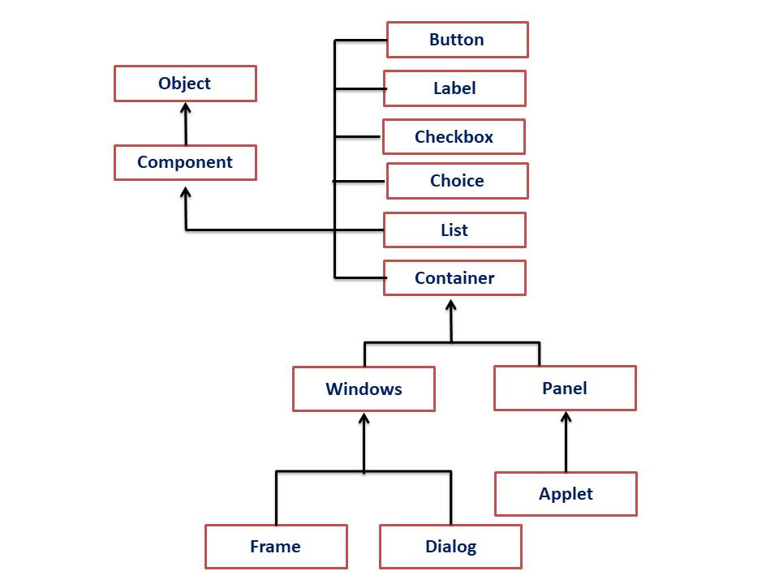
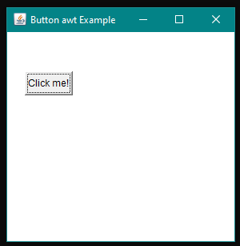

Basics of Java AWT
| Table Of Content |
|---|
About AWT
AWT(Abstract Window Toolkit) is an Application programming Interface used to develop GUI(Graphical User Interface) or Window based application in Java.
Java AWT Components are platform dependent that is components are displayed according to view of Operating System.
AWT is heavyweight, which means that its components consume resources from the underlying operating system (OS).
Java AWT Hierarchy
The Hierarchy of Java AWT Classes are given below.
- Components: AWT provides a set of core GUI components such as buttons, labels, text fields, checkboxes, radio buttons, lists, menus, and more.
- Containers: AWT provides containers like panels, frames, and dialogues to organize and group components in the Application.
- Layout Managers: AWT provide Layout managers handle the sizing and positioning of components based on various rules and constraints.
- Event Handling: AWT supports event-driven programming, that allow developers to respond to user interactions such as mouse clicks, key presses, and window events.
- Graphics and Drawing : AWT provides classes for rendering graphics and performing to draw shapes, write text in the component of java Application.
Types of Container in Java AWT
There are four types of container in java awt:
- Window : Window is a top-level container that represents a window on the screen. It can have a title bar, border, and menu bar.
- Frame : It is a subclass of window and has a title bar, menu bar, border, and resizing corners. If you create a frame object from within a applet, it will contain warning message, such as "java applet window", to the user applet window has been created.
- Dialog : Dialogs is a temporary box that are typically used for displaying messages, getting user input, or performing actions that require user interaction.
- Panel : Panel is the superclass for applet. When screen output is directed to an applet, it is drawn on the surface of a panel object. A Panel is a window that does not contain a title bar, menu bar, or border.
AWT packages in Java
java.lang.Object
│
└── java.awt.Component
│
├── java.awt.Container
│ │
│ ├── java.awt.Window
│ │ │
│ │ └── java.awt.Frame
│ │ │
│ │ └── java.awt.Dialog
│ │ │
│ │ └── java.awt.FileDialog
│ │
│ ├── java.awt.Panel
│ ├── java.awt.ScrollPane
│ ├── java.awt.Scrollbar
│ ├── java.awt.TextField
│ ├── java.awt.TextArea
│ ├── java.awt.Button
│ ├── java.awt.Label
│ ├── java.awt.Checkbox
│ ├── java.awt.CheckboxGroup
│ ├── java.awt.CheckboxMenuItem
│ ├── java.awt.Choice
│ ├── java.awt.List
│ ├── java.awt.MenuComponent
│ │ │
│ │ ├── java.awt.Menu
│ │ │ │
│ │ │ └── java.awt.PopupMenu
│ │ │
│ │ ├── java.awt.MenuItem
│ │ │ │
│ │ │ └── java.awt.MenuShortcut
│ │ │
│ │ └── java.awt.MenuBar
│ │
│ └── java.awt.Canvas
│
└── java.awt.Graphics
Java AWT Example
Now let's see the simple Example of AWT where we inherit Frame class and show the Label component on the Frame.
Example1:
import java.awt.*;
public class HelloAWT extends Frame {
Label l;
public HelloAWT() {
// Set the title of the frame
setTitle("Hello World AWT Example");
// Set the size of the frame
setSize(500, 500);
// Create a label with the text "Hello, World!"
l = new Label("Hello, World!");
//set bound from top,right, bottom ,left
l.setBounds(150,100,250,20);
// Add the label to the frame
add(l);
// Set layout to BorderLayout (default for Frame)
setLayout(null);
// Set the frame to be visible
setVisible(true);
}
public static void main(String[] args) {
// Create an instance of the HelloAWT class
HelloAWT obj = new HelloAWT();
}
}

In this below example we are showing button component of the Frame.
// create button using java awt
import java.awt.*;
public class AwtExample extends Frame{
AwtExample(){
Button b = new Button("Click me!");
b.setBounds(30,80,60,30);
add(b);
setSize(300,300);
setLayout(null);
setTitle("Button awt Example");
setVisible(true);
}
public static void main(String [] args){
AwtExample obj = new AwtExample();
}
}

Note : when you close java awt window press ctrl+c in cmd.